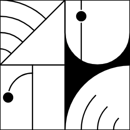

Nathaniel Davila a.k.a. ~dovwer-sipdep
I tinker a little with electronics, occasionally I play puzzle video games, but most importantly moonlight as a sysadmin for an Urbit star. Urbit is a calm, P2P social networking platform. Break free from the dystopian future at Tlon.io. The future isn't scary; it's calm.
Generally, I'm interested and excited about projects in which the consumers and producers incentives are aligned.
dovwer-sipdep.net is my personal website, a tribute to the creative web of the 90s.
Currently 
I run the star (infrastructure node) ~notyet on Urbit. Also, I provide bitcoin services via my planet (personal server) ~dovwer-sipdep.
Join the cult at Tlon.io
I am open junior sysadmin job opportunities anywhere in US, New Zealand, or Canda, or remote.
Retro Stuff 
I didn't quite have enough money growing up to say, "I grew up with the internet of the 90s and early 2000s." because there was only 1 telephone line in the house, so often I would tinkering with my computer offline. For example, installing Linux, upgrading my hardware, and editing videos; I experessed my creativity through general purpose computing. I have some nostalgia, but not so much that I forget that the original vision of the internet P2P network was lost at that time when the client-server dominated the infrastructure for the World Wide Web (WWW).
Fortunately, I am not the only one who remembers what could have been. Here are a few icons who write to tell us about the potential of the internet that was lost, and how it could be reclaimed!  Click the icon below to enter my Reboot Computing Collection Ted Nelson, Jaron Lanier, and Urbit, Urbit, Urbit.
Click the icon below to enter my Reboot Computing Collection Ted Nelson, Jaron Lanier, and Urbit, Urbit, Urbit.
 Guestbook
Guestbook
Don't be a stranger. If you have a comment, suggestion or simply want to say hello, you can sign my guestbook. Or read what others have written.

Contact 
You can also get in touch with me via email (nat.admin@protonmail.com), or ~dovwer-sipdep on Urbit.
— This website is under construction. Last updated: 2021 July 19.
This website is under construction. Last updated: 2021 July 19. All original text and music on this website are free and in the public domain under the CC0 1.0 Universal license. Download, copy and remix any way you like.
All original text and music on this website are free and in the public domain under the CC0 1.0 Universal license. Download, copy and remix any way you like. Original template made in France. All pages hand-coded, like in the old days. Valid HTML and CSS.
Original template made in France. All pages hand-coded, like in the old days. Valid HTML and CSS. Hosted on AWS with CloudFront. View website source code on GitHub.
Hosted on AWS with CloudFront. View website source code on GitHub.  Best viewed in any browser, including Netscape Navigator, Firefox and lynx.
Best viewed in any browser, including Netscape Navigator, Firefox and lynx. Part of the Hotline Webring. You can go to Previous or to Next.
Part of the Hotline Webring. You can go to Previous or to Next. The main font is Barlow by Jeremy Tribby.
The main font is Barlow by Jeremy Tribby.